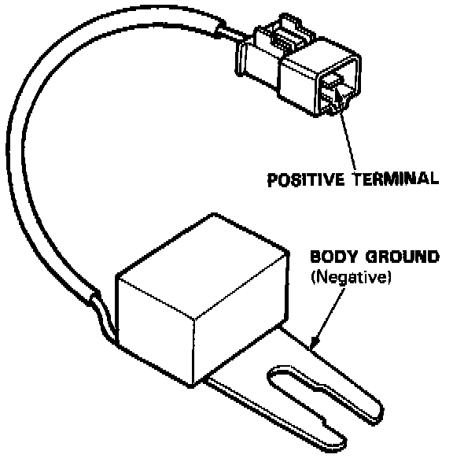

Condenser: Testing and Inspection
INSPECTION
1. Use a commercially available condenser tester. Connect the condenser tester probes and measure the condenser capacity.
Condenser capacity: 0.47 ± 0.09 microfarads
NOTE: The [1][2]noise condenser is intended to reduce ignition noise. However, condenser failure may cause the engine to stop running.
2. If not within the specifications, replace the [1][2]noise condenser.